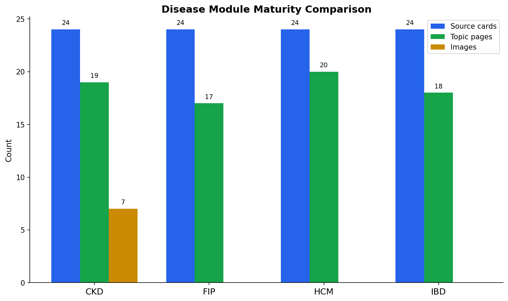

Raw layer is not fully immutable
Source cards live under raw/papers/. That is disciplined, but it is not the same as archiving original PDFs, web clips, checksums, and acquisition metadata.
结论：底层证据纪律强，前台活 wiki 感仍弱。最该补的不是更多 memo，而是 MCP 能力诚实、bootstrap 模块路由保护、health action severity、write-back 可见性、以及最小 AI-readable export。
Source cards live under raw/papers/. That is disciplined, but it is not the same as archiving original PDFs, web clips, checksums, and acquisition metadata.
Obesity has 8 partial cards and explicit thin-source caveats. It should not route like mature disease modules until Tier A deep extraction exists.
The docstring advertises vault_query, but tools/list exposes only vault_search, compile_check, and source_list.
The health report is active while thin-source reader pages and changed-source compile queues still need operator action.
compile_trigger.py works, but it is still a manual command. Karpathy-style linting wants a repeated report loop.
Query answers can be saved to outputs or inbox, but the user cannot yet see a clear reviewed/preserved/promoted trail.
The diabetes/obesity intake workflow exists. The next generalization needs repo-owned disease-marker config, not another one-off parser change.
There is no llms.txt, graph.jsonld, page JSON, or tiny static wiki export. The vault is agent-usable locally, not web/wiki consumable.
vault_query or remove the claim.llms.txt, graph.jsonld, and 3-5 page text/json exports.Existing generated chart asset. The static export should eventually make these assets discoverable from AI-readable metadata, not just from markdown links.

Run these 3-10 times across real content batches before installing scheduled checks. Cron is appropriate for deterministic reports only, not judgment-heavy content promotion.
python3 scripts/health.py
python3 scripts/compile_trigger.py --since 1 --json
python3 scripts/check_markdown_links.py
python3 scripts/test_query.py